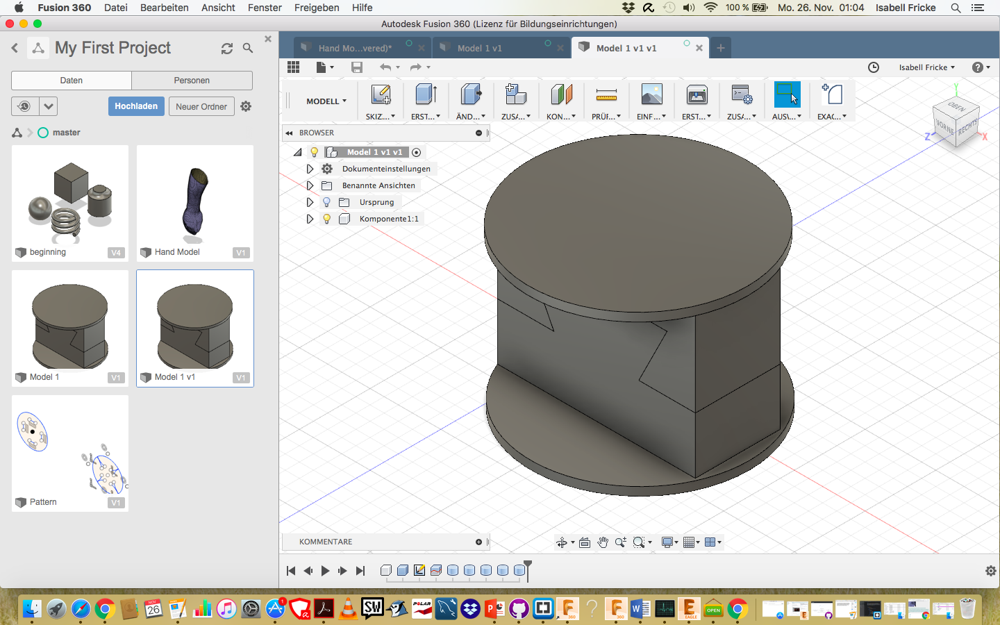

Week 4 3D Scanning and 3D printing
3D printing or additive manufacturing is a process of making three dimensional solid objects from a digital file. The creation of a 3D printed object is achieved using additive processes. In an additive process an object is created by laying down successive layers of material until the object is created. Each of these layers can be seen as a thinly sliced horizontal cross-section of the eventual object. 3D printing is the opposite of subtractive manufacturing which is cutting out / hollowing out a piece of metal or plastic with for instance a milling machine. 3D printing enables you to produce complex (functional) shapes using less material than traditional manufacturing methods. To print with a 3D Printer first you have to create a 3D model in your computer. This digital design is for instance a CAD (Computer Aided Design) file. A 3D model is either created from the ground up with 3 modeling software or based on data generated with a 3D scanner. With a 3D scanner you’re able to create a digital copy of an object
Source: https://3dprinting.com/what-is-3d-printing/
Source 3D printer picure: http://www.designtos.com/post_cad-software-for-3d-printing_186738/
First, a body is created in the program Fusion 360 °. The following pictures show the progress of the process

To create this follow the instructions: First we need to create the single bodys


This is what the finished body to pirnt looks like The file must be saved as STL file to open later in Cura. Explanation about Cura is given below.